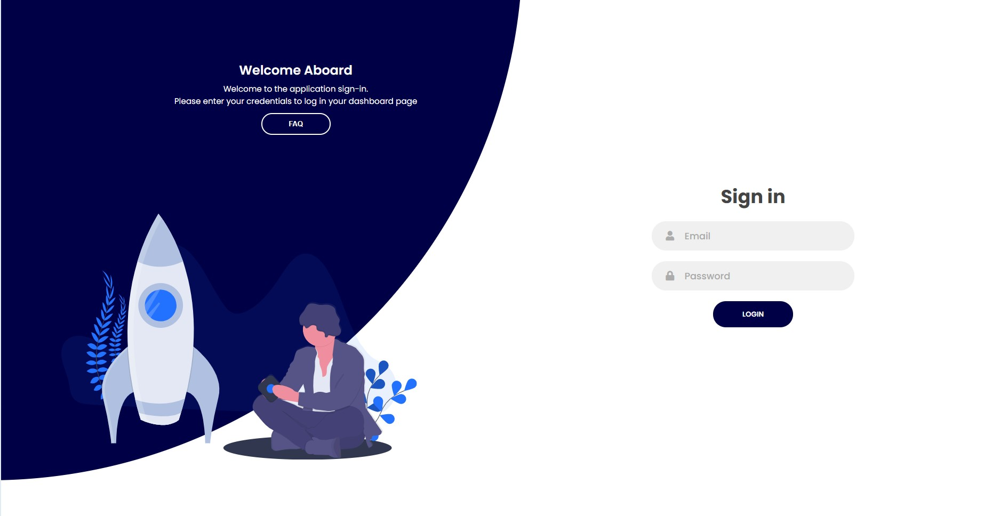

Stylesheet at path public_html/css/indexstyle.css used for portal page index.html .
Stylesheet at path public_html/css/dashboard.css used for the rest of the pages .
Custom script at path public_html/js/custom.js is used for responsiveness for employee and adminstrator dashboards.
function myFunction() is inserted to adminstratordashboard.php and employeedashboard.php on keyup to search bar.It is responsible for searching throught cards for a specific user or a past application.
When an adminstrator clicks a user card there is a $(".card").click(function(event){} where the specific card title/subtiles innerTexts are submitted through a hidden form with id="propertiesform" to propertiespage.php.
When a user submits an application at createapplication.php function validateForm() add to prevent Vacation End period being identical or sooner than vacation start period
User email and hashed_password is authenticated
After succesfull authentication user_type is check . Depending on its value user is headed to Employee or Adminstrator Dashboard
$_SESSION variables are being set after successfull authentication
List of users is generated through a for loop for every result of query ('SELECT * FROM users') at table users.
On page request all $_SESSION[''] variables must be validated , those are assigned upon successfull identification at portal.Also $_SESSION['user_type'] is also validated so that Employees cant access Admin Dashboard and the opposite
Those are required php files
require config.php (Db configuration using PDO)
require CSRFgeneratetoken.php (For csrf token generation.It fires up at every refresh generating a new token each time . Stored as $_SESSION variable and compared with the token from POST/GET form requests)
require CSRFvalidatetoken.php (For csrf token validation to post / get requests. Validation doesnt happen if $_POST or $_GET request is empty)
require filter.php (Filters $_GET / $_POST variables of html tags / special characters)
On page request all $_SESSION[''] variables must be validated , those are assigned upon successfull identification at portal.Also $_SESSION['user_type'] is also validated so that Employees cant access Admin Dashboard and the opposite
Password and Confirm passwords are checked to be equal otherwise inform user
If every field posted and email is not already registered user is inserted to the system
Passwords are hashed before insertion to database
Those are required php files
require config.php (Db configuration using PDO)
require CSRFgeneratetoken.php (For csrf token generation.It fires up at every refresh generating a new token each time . Stored as $_SESSION variable and compared with the token from POST/GET form requests)
require CSRFvalidatetoken.php (For csrf token validation to post / get requests. Validation doesnt happen if $_POST or $_GET request is empty)
require filter.php (Filters $_GET / $_POST variables of html tags / special characters)
User notified for the outcome of his action . Variable name : $e_msg
On page request all $_SESSION[''] variables must be validated , those are assigned upon successfull identification at portal.Also $_SESSION['user_type'] is also validated so that Employees cant access Admin Dashboard and the opposite
Password and Confirm passwords are checked to be equal otherwise inform user
Form can be submitted can also be submitted without changing the password of the user
Passwords are hashed before insertion to database
Update user 's properties are inserted to the database . Also they are POSTED back to propertiespage.php so that can be changed again!
User notified for the outcome of his action . Variable name : $e_msg
User is identified with his id , which is POSTED from adminstrator.php and saved to a SESSION variable .
Those are required php files
require config.php (Db configuration using PDO)
require CSRFgeneratetoken.php (For csrf token generation.It fires up at every refresh generating a new token each time . Stored as $_SESSION variable and compared with the token from POST/GET form requests)
require CSRFvalidatetoken.php (For csrf token validation to post / get requests. Validation doesnt happen if $_POST or $_GET request is empty)
require filter.php (Filters $_GET / $_POST variables of html tags / special characters)
On page request all $_SESSION[''] variables must be validated , those are assigned upon successfull identification at portal.Also $_SESSION['user_type'] is also validated so that Employees cant access Admin Dashboard and the opposite
List of users is generated through a for loop for every result of query ('SELECT * FROM applications') at table applications.
Those are required php files
require config.php (Db configuration using PDO)
require CSRFgeneratetoken.php (For csrf token generation.It fires up at every refresh generating a new token each time . Stored as $_SESSION variable and compared with the token from POST/GET form requests)
require CSRFvalidatetoken.php (For csrf token validation to post / get requests. Validation doesnt happen if $_POST or $_GET request is empty)
require filter.php (Filters $_GET / $_POST variables of html tags / special characters is modified to allow spaces)
On page request all $_SESSION[''] variables must be validated , those are assigned upon successfull identification at portal.Also $_SESSION['user_type'] is also validated so that Employees cant access Admin Dashboard and the opposite
Create application form is submitted to employeedashboard.php with a POST request.
Added a validateForm(){} function that allows submition when (date_from < date_to)
Those are required php files
require config.php (Db configuration using PDO)
require CSRFgeneratetoken.php (For csrf token generation.It fires up at every refresh generating a new token each time . Stored as $_SESSION variable and compared with the token from POST/GET form requests)
require CSRFvalidatetoken.php (For csrf token validation to post / get requests. Validation doesnt happen if $_POST or $_GET request is empty)
require filter.php (Filters $_GET / $_POST variables of html tags / special characters is modified to allow spaces)
I used an no-reply-gmail that is placed between users_email and admins_email . Depending on the circumastances , sends email to inform user about the outcome or to send a reject/accept link to the Supervisor
For allowing to use mail() php inbuild function with XAMP we have to set these variables at sendemail.ini file
smtp_server=smtp.gmail.com
smtp_port=587
smtp_ssl=auto
error_logfile=error.log
auth_username=//yourgmail
auth_password=//yourgmail password
Also set these variables at php.ini file
SMTP=smtp.gmail.com
smtp_port=587
sendmail_from = //yourgmail
sendmail_path = "\"C:\xampp\sendmail\sendmail.exe\" -t" //your path to sendemail.exe file
Remember to change your security option from gmail console to allow third parties to send emails in its behalf
You can change it here Link ---->https://myaccount.google.com/lesssecureapps? , you must be logged in at your gmail
Accept/Reject link is sended with a email_handler variable , randomly created and inserted to database.Used for authentication of the current application.Also Supervisor must be verified from portal to use this feature!
Passwords hashed
Used PDO preventing SQL injections
CSRFtoken authentication to every form / added expire-time to every token set to 1 hour
Install XAMP
Install Apache and mySQL services in your XAMP control panel
Initiate Apache and mySQL services
Open htdocs folder located inside the XAMP home directory
Place Documentation and public_html files in htdocs folder
At XAMP control panel click Admin button at mySQL module
You can create a new database user and define its parameters or you can leave it default with username:root and without password
Import database dump file at phpmyadmin panel file name ---->db_dump.sql
Configure the email system described in previous section above
You are ready to go . Open your browser and follow links : localhost/public_html and localhost/documentantion